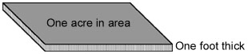

The amount of coal beneath a piece of real estate at first seems like a very difficult thing
to estimate. However, it can be easily understood if we combine a simple
exercise in geometry with a simple exercise in density.
The geometry lesson
Using geometry we can calculate the volume of coal that is beneath a piece
of land. The basic unit of measure for calculating the volume of coal beneath
a property is the acre-foot. An acre-foot of coal is a block of coal one
acre in area and one foot thick.

If we have a coal property of 100 acres and drill several holes across the property
to test the thickness of the coal, we can easily calculate the number of
acre-feet of coal beneath the property. Let’s imagine that the average
thickness of coal found in the test holes is 5 feet. Knowing that, we can
calculate the number of acre-feet of coal beneath the property using the
following formula:
size of property in acres x average coal thickness in feet = acre-feet of
coal beneath property
Our example property has ( 100 acres x 5 feet ) = 500 acre-feet of coal.
The density lesson
If we cut a solid block of coal from a seam, and that solid block was one
foot tall, one foot wide, and one foot in length, it will weigh approximately
82.6 pounds. Knowing that, and also knowing there are 43,560 cubic feet
in one acre-foot, we can easily calculate that an acre-foot of coal weighs
approximately 1800 tons (43,560 cubic feet x 83 pounds per cubic foot /
2000 pounds per ton). We can therefore calculate the number of tons of coal
beneath a property using the following formula:
acre-feet of coal beneath a property x 1800 tons/acre-foot
= tons of coal beneath a property
Our example property has 900,000 tons (500 acre-feet x 1800 tons/acre-foot) of coal.
Recoverable tonnage
The number of tons of coal that we calculated above represents the number
of tons present within the ground. When estimating the value of a
coal property, the number of tons that are recoverable is a more relevant
number. In the "Mining Methods" section of this activity, you
learned that surface mines and underground mines have different recovery
rates. Surface mines typically recover 90% of the coal, while underground
mines typically recover only 50% of the coal. We can therefore calculate
the number of tons that can be recovered from a coal property using the
following formula:
tons beneath a property x recovery rate = tons of coal that can be produced
from a property
Our example property has 450,000 tons (900,000 tons x .50) recoverable by
underground mining methods, or 810,000 tons (900,000 tons x .90) recoverable
by surface mining methods.